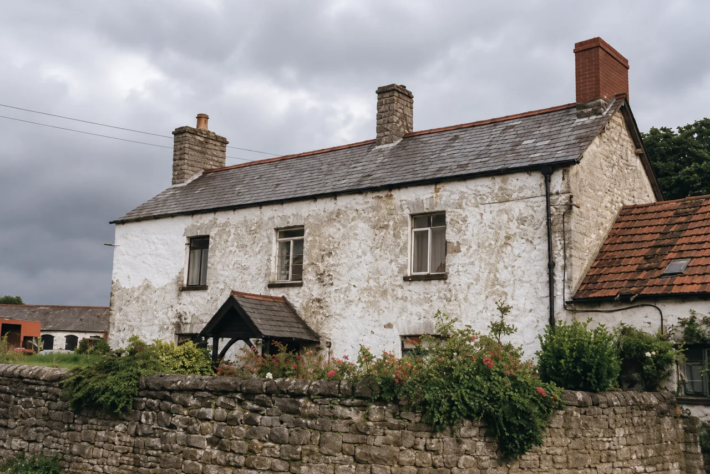

Research Library · Scene reconstructions
AR-REC-0001 — Tŷ Mawr (Great House Farm), Llandough, as recorded on 29 July 1988
Artist's impression — modern interpretive reconstruction, not a photograph and not evidence
Description
The visible building features follow the Cadw survey photograph of 29 July 1988 (GHF-E106-R37-A2, disclosed under ATISN 27021): the two-storey rendered stone farmhouse with weathered whitewash, slate roof, three chimney stacks (two stone, one red brick), gabled timber porch, dry-stone garden wall with garden plants, the lower pantile-roofed side wing, outbuildings to the west and faint overhead power lines. Surface textures, vegetation and any detail hidden in the photograph are derived finishes, not record.
The Heneb Historic Environment Record GGAT02038s (quoting R. F. Suggett, December 1988; RCAHM Inventory IV.2 p.582 no.445) records farmhouse and barn
built of local lias limestone, and occupied an historic site next to the parish church … Externally both farmhouse and barn appeared to be of C19th date. Internally, however, surviving vernacular detail — a blocked stone fireplace stair and ogee-stopped beams — suggested a C17th date for the house.The same record classifies Great House as a sub-medieval house of direct-entry type — cross-passage end-chimney plan with masonry partitions and external wall batter on the unreconstructed north side — its core possibly medieval. The GGAT assessment filed August 1990 (GHF-E106-R95-A1) states:
The seventeenth century phase is associated with the Vaughan Family, the nineteenth century work with the Bute Estate.Setting from the OS six-inch map Glamorgan XLVII.NW revised 1947 (GHF-E106-R61-A1): the house and yard between the wooded old limekiln and quarry ground to the north and open ground to the south-east, beside St Dochdwy's church.
Interpretation
This image re-renders the documented 1988 appearance only; no feature is dated earlier than the photograph and the official-record descriptions quoted. The construction dates of the porch, the three chimney stacks, the windows and the pantile side wing are not established by the held sources — the HER dates the exterior only to a C19th character, and the C17th and possible medieval phasing rests on interior detail and plan form that this exterior view does not show. The rear elevation, interior and roof trusses are unrecorded in the held sources (the 1974 survey covered the ground floor only; access was limited by the ownership dispute).
Minor rendering deviations from the photograph are possible in a generated image; the photograph remains the record and this image must never be cited as a source alongside it. The image does not support or weaken any title, phase or family-history position.
Wireframe twin — for the Wales tour

Sources
| Record | Role |
|---|---|
| GHF-E106-R37-A2 — Cadw survey photograph of the farmhouse, 29 July 1988, disclosed by Cadw / Welsh Government under ATISN 27021 | Geometric and visual basis |
| Heneb Historic Environment Record GGAT02038s — R. F. Suggett, December 1988, citing RCAHM Inventory IV.2 (Greater Glamorgan) p.582 no.445. Original record: archwilio.org.uk/her/chi3/report/page.php?watprn=GGAT02038s (live-checked 31 Oct 2026; Inventory page not yet inspected directly) | Fabric and phase descriptions, demolition date 6 Dec 1988 |
| GHF-E106-R95-A1 — GGAT assessment filed August 1990 | Phase attribution; 1974 in-situ features; rubble observations |
| GHF-E106-R61-A1 — Ordnance Survey six-inch Glamorgan sheet XLVII.NW, revised 1947, published 1950 | Setting |
| EV-0215 — tithe apportionment, c.1841 (Glamorgan Archives; catalogue page live) | Context for the holding (John Williams, occupier, 36 plots); not evidence for the building's date |
Page version & change log
| Version | Date (UTC) | Editor | Change | Source / evidence | Verification status |
|---|---|---|---|---|---|
| 0.1.0 | 2026-10-31T11:30Z | Instinct (scene-reconstruction task; HubSpot 536842623165) | Page created: faithful re-render of the recorded 1988 scene, wireframe twin, description and interpretation fields | GHF-E106-R37-A2; Heneb HER GGAT02038s; GHF-E106-R95-A1; GHF-E106-R61-A1; EV-0215 | Working entry; HER quoted as an outside record we test; Inventory IV.2 p.582 not yet inspected directly |
Reconstruction images on Cedwyn are artist's impressions made from quoted records. They are held as reconstructions, never as evidence.